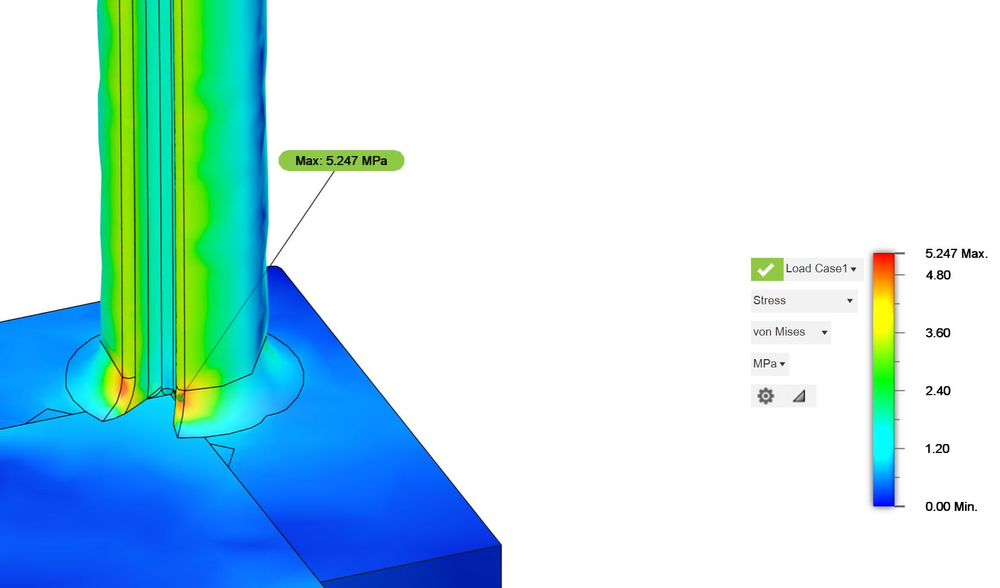
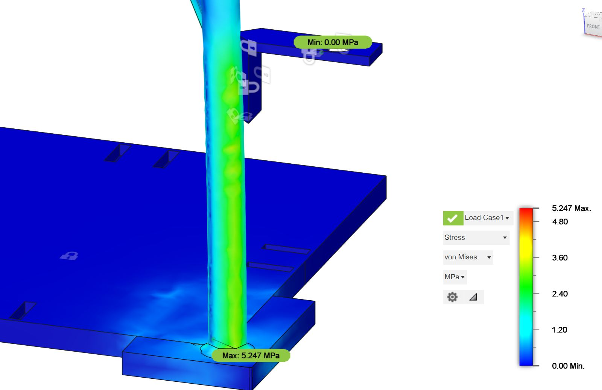

← All projects
Robotics · ECLAIR
T.R.A.C.E.
A closed-loop robot that uses PID control and computer vision to balance and manipulate a ball.

PID control · Computer vision · Closed-loop robotics · Fusion 360 finite element analysis
The project
T.R.A.C.E. is a closed-loop robotic platform that uses PID control and computer vision to balance and manipulate a ball. The team won first place for “Best Overall” among six engineering projects.
Design and analysis
I used finite element analysis in Fusion 360 to identify failure points, improve part geometry, and model the project.

